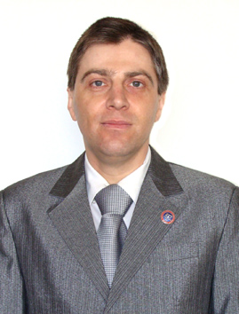

Шлепнёв Сергей Владимирович

доцент кафедры ЭПГ, декан факультета интеллектуальной электроэнергетики и робототехники.


Читаемые курсы:
- Электротехнические материалы (на русском и английском языках);
- Электроматериаловедение;
- Современные источники энергии и материалы;
- Электрические аппараты (на английском языке).
Окончил ДонГТУ по специальности “Электроснабжение промышленных предприятий и городов” в 1994 г.
22.10.1998 г. защитил диссертацию на тему “Создание феррогидродинамических указателей тока короткого замыкания с улучшенными техническими характеристиками” на соискание учёной степени кандидата технических наук по специальности 05.09.01 “Электрические машины и аппараты”.
В 2002 г. приказом по Министерству образования и науки Украины присвоено учёное звание доцент.
Научные интересы:
- создание простых и надёжных устройств контроля состояния повреждённых участков городских и сельских распределительных сетей напряжением 6–10 кВ,
- изучение эффективности гашения пламени при помощи действия внешнего электрического поля.
Опубликовал более 15 научных и научно-методических работ. Среди них:
- Ожерельев И.Д., Шлепнёв С.В. Оптимизация работы феррогидродинамического указателя тока короткого замыкания // Технічна електродинаміка. — 1998. - №3. — с. 63–64
- Шлепнёв С.В., Бершадский И.А., Елиософ В.А. и др. Исследование динамических параметров указателя тока короткого замыкания // Сборник трудов ДонГТУ. Серия: Электротехника и энергетика. Вып. 2. — Донецк: ДонГТУ. — 1998. — с. 74–78.
- Шлепнёв С.В., Бершадский И.А. Совершенствование эксплуатационных характеристик гидравлического указателя тока короткого замыкания с целью их регулировки и согласования с действием релейной защиты // Збірник наукових праць ДонДТУ. Серія “Електротехніка і енергетика”, випуск 17. - Донецьк: ДонДТУ. — 2000. — с. 198–200.
- Бершадский И.А., Шлепнёв С.В. Численный расчёт втяжного электромагнита постоянного тока с корпусом в виде скобы // Збірник наукових праць ДонДТУ. Серія “Електротехніка і енергетика”, випуск 28. - Донецьк: ДонДТУ. — 2001. — с. 103–105.
- Коломытцев А.Д., Шлепнёв С.В. Моделирование электромагнитной совместимости конденсаторных установок // Вісник Кременчуцького державного політехнічного університету: Наукові праці КДПУ. — Кременчук: КДПУ. — 2002. — Вип. 1(12). — с. 397–400.